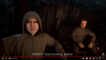
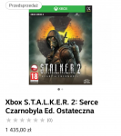

Byłoby dziwne, gdyby zabrakło wątku o tej grze. Internet bzyczy na temat jej premiery w 2021 roku, co oznacza, że prace nad nią zostały wznowione. Plotki mówią też, iż będzie ona oparta o Unreal Engine.
Wrzucam link - klik.
Wrzucam link - klik.
56 postów

No nie powiem, do miłych wiadomości się rano obudziłem. Oczekiwań nie mam żadnych, miło że coś się kręci, a premiera w 2021 to pewnie dopiero pierwszy krok do when it's done, jak to u GSC.
Mam tylko nadzieję że plotki dotyczące silnika to bzdury; póki świat wiruje unreal engine będzie chujem.

Na dodatek czytałem kod X-Ray Engine
Tak naprawdę, jeśli oparliby swoją grę o gotowy silnik, mieliby większość problemów z głowy
poza tym Unreal jest dojrzały i dobrze zoptymalizowany
nadawał grze ten szorstki charakter zamiast charakteru narzędzia do brandzlowania jak wszystkie gry na UE.
Lepsze niż Kod da Vinci?
Pewnie tylko najwięksi fani uniwersum wierzyli w zapowiedź STALKER 2. Trudno w tym wypadku mówić o wielkiej prezentacji, ponieważ twórcy pokazali wyłącznie nazwę i wspomnieli, że gra zadebiutuje w 2021 roku.
GSC Game World postanowiło ujawnić prace nad tytułem z prostego powodu – twórcy wciąż nie znaleźli odpowiedniego wsparcia w postaci wydawcy, więc przedstawienie gry przed E3 2018 ma pomóc w pozyskaniu wsparcia.
Nie jest to normalna zagrywka, ale podobno przemyślana strategia, dzięki której zespół otrzyma niezbędną gotówkę na realizację projektu. Według niepotwierdzonych informacji, STALKER 2 wciąż znajduje się w pre-produkcji.
Sergey Galyonkin z Epic Games uważa nawet, że STALKER 2 to tak naprawdę dopiero „plan projektu”, z którego kiedyś tam może powstać ciekawa pozycje, ale nie możemy w tym wypadku liczyć na jakiekolwiek szczegóły, a nawet materiały w przeciągu następnych… Lat? Zdaniem Galyonkina ujawnienie gry odbyło się bez konsultacji całego zespołu.

Mam nadzieję, że nie będę musiał wymieniać kompa żeby w to zagrać.
W tej chwili zmieniłem na 8600K i 1070Ti, będę pełen podziwu jak w 1080p nie poradzi sobie ten sprzęt.


Szybciej wyjdzie Innovation Mod do Stalkera 2 niż sam Stalker 2. Zamykam ten wątek.
Daleko jeszcze?
Daleko w chuj.

CS to jedna z najgorszych gier w jakie kiedykolwiek grałem. Fabuła tragiczna, mechanika wojny frakcji tragiczna, dramat.
CoP jest rewelacyjny, fabularnie bardzo dobry, ale trochę mu brakuje w kwestii klimatu do SoC.
Jakby tak wymieszali SoC z CoP to byłbym szczęśliwy.
Już nawet przebolałbym kulejącą fabułę, gdyby gra była dobrze dopracowana pod względem samej rozgrywki… Niestety CS nie pokazuje się ze zbyt dobrej strony.
W ogóle mogliby postawić SoC na silniku z CoP, ew. Open X-Ray :3
A tam opowiadasz. ;) Lokacje były ciekawe, podróż do Prypeci była fajnie przemyślana, zbieranie teamu, itd. Fajny był też motyw z odkryciem historii Powinności. To, co mnie totalnie zawiodło, to sam Prypeć i zadania już wokół niego. Kompletnie niewykorzystany potencjał.
Nic nie mówię, ale stronka się ruszyła. GSC opublikowało artwork i motyw muzyczny.
Słuchałem utworu - industrial, ambient i, wydaje mi się, że fragment melodii z menu głównego SoC ^^

Że Stachursky ma śpiewać Dosko w Agropromie.

masz Solvauke, bo Twój psiapsiółek się chyba zaczytał w CDA.

| Minimalne wymagania sprzętowe STALKER 2 | Rekomendowane wymagania sprzętowe STALKER 2 | |
| System operacyjny | 64-bitowy Windows 10 | 64-bitowy Windows 10 |
| Procesor | Intel Core i5-7600K lub AMD Ryzen 5 1600X | Intel Core i7-9700K lub AMD Ryzen 7 3700X |
| Pamięć RAM | 8 GB | 16 GB |
| Karta graficzna | NVIDIA GeForce GTX 1060 (6 GB) lub AMD Radeon RX 580 | NVIDIA GeForce GTX 1080 Ti, GeForce RTX 2070 SUPER lub AMD Radeon RX 5700 XT |
| Dysk | 150 GB wolnego miejsca | 150 GB wolnego miejsca |

Jeśli chodzi o Uttę to wg oficjalnych danych ze stalker2.com nie wygląda to dobrze
Proponuję petycję do ministra Ziobry w tej sprawie.

To ja jeszcze z takim obrazkiem
Porównanie wersji pre-orderów przypomniało mi, że Stalker miał coś takiego jak multi. xD
Anyway - ciekawe jakie plany na to? Znowu tylko jakieś napierdalajki kanter srajki czy może łaszą się na coś ambitniejszego?
Długo żaden pijany Kabel nie darł mi się w słuchawkach, więc grałbym.
EDIT: nadzieja tylko, że nie zmienili podejścia do battle royale, bo mi sperma Miski nosem wyjdzie.
które to uniwersum ciągnie modami czy tam jakimiś gównofanowskimi książkami
Lepszy wschodnioeuropejski wróbel w garści, niż hamburgerowy gołąb na dachu, który nigdy nie wiadomo czy mimo amerykanizacji zakocha się dolarami w nowym Stalkerze.
Niech kurwa Grigorowicz nie trzyma tych jebanych praw autorskich tyle lat na marne, bo za amerykanizację to mógł już je opierdolić dekadę temu.
Dalej ktoś moduje tego spleśniałego trupa? :O Wiem, że jest Open X-Ray, w którym naprawiono ogrom błędów pierwotnego silnika i pozbyto się chorób wieku dziecięcego, ale nie wiedziałem, że ktoś jeszcze mody robi xD

Oni mają już swoje Metro, które, wydaje mi się, że zostało całkiem dobrze przyjęte przez Amerykanów. Nawet widziałem ostatnio filmik, jak to nowy Stalker jest kopią Exodusa
Mam wrażenie, że Grigorowicz to bardzo specyficzna osóbka, która dość osobiście podchodzi do uniwersum Stalkera i dzieł studia GSC. Ma w sobie trochę z psa ogrodnika, który sam nie zje i drugiemu nie da, ale w tym przypadku to dobrze, bo w końcu, po tych czternastu latach, coś się zaczęło kręcić. Oby tylko to kręcenie nie ujebało łba albo wora powstającemu dziełu.
Tak, nasz forumowy Infuś Pimpuś np. zrobił EgzoSevę dostępną dla gracza, a nie tylko dla enpeców, jak to miało mieć w zwyczaju Anomaly!
Grigorowicz to chyba ten Pan z trailera, co drze japę, że nie odda Zony nikomu, że ona dała mu życie, i że będzie jej bronił - mam nadzieję, że przed spierdoleniem jej też.

Postacie pewnie będą pewnie miały jakieś charaktery i chyba nawet emocje. Nie wiem czy to dobrze, bo jednak wszyscy jesteśmy przyzwyczajeni do tego, że to już wśród jętek widać więcej emocji, niż u stalkerów
Z drugiej strony nie wiem jak tak wykastrowane ze wszystkiego drewniane enpece przeszły i nie przeszkadzały w rozgrywce, niechaj świadczy to jeszcze bardziej o zajebistości samej Zony i klimatu, który dostarczała.
wszyscy byli tam tak betonowo-drewniani
Ba, teraz można będzie nawet poczuć "żal", zabijając ich :D
Dlatego Łildżak na admina!
Weź mi nawet nie wspominaj tego głąba.
A Ty to... kto?
Dlatego Łildżak na admina!
Nie wiem czy to dobrze, bo jednak wszyscy jesteśmy przyzwyczajeni do tego, że to już wśród jętek widać więcej emocji, niż u stalkerów (...)
Z drugiej strony nie wiem jak tak wykastrowane ze wszystkiego drewniane enpece przeszły i nie przeszkadzały w rozgrywce, niechaj świadczy to jeszcze bardziej o zajebistości samej Zony i klimatu, który dostarczała.
Mam wrażenie, że Grigorowicz to bardzo specyficzna osóbka, która dość osobiście podchodzi do uniwersum Stalkera i dzieł studia GSC. Ma w sobie trochę z psa ogrodnika, który sam nie zje i drugiemu nie da, ale w tym przypadku to dobrze, bo w końcu, po tych czternastu latach, coś się zaczęło kręcić. Oby tylko to kręcenie nie ujebało łba albo wora powstającemu dziełu.

{kind=link}
{kind=link}